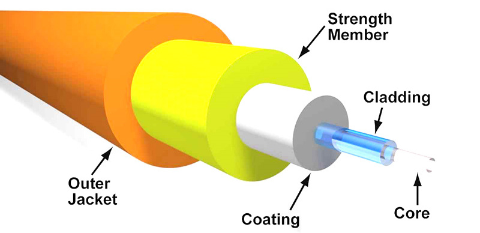

Fiber Optik adalah jenis kabel yang terbuat dari serat plastik dan kaca halus, yang berfungsi untuk menghubungkan antar perangkat maupun pengguna dalam lingkup wilayah tertentu. Dibandingkan dengan teknologi kabel coaxial pada umumnya, bandwidth serat optik jauh lebih besar karena mampu mencapai kecepatan gigabyte per second (Gbps). Sehingga, proses transfer data yang terjadi bisa jauh lebih cepat. Serat optik cenderung stabil dalam penggunaannya dan jarang sekali mengalami gangguan, sebab tidak membawa arus listrik serta tak dipengaruhi oleh elektromagnetik.
UTP (Unshielded Twisted Pair) adalah jenis kabel jaringan yang terdiri dari pasangan kabel tembaga yang saling terpilin tanpa pelindung tambahan (shielding). Kabel ini umum digunakan dalam instalasi jaringan komputer (LAN) dan telekomunikasi karena harganya yang terjangkau, fleksibel, dan mudah dipasang. Fungsinya adalah digunakan pada jaringan LAN untuk membantu menghubungkan komputer ke perangkat jaringan atau komputer ke komputer ataupun antara perangkat jaringan itu sendiri.
Fiber optik cocok untuk kebutuhan jaringan skala besar yang memprioritaskan kecepatan tinggi, stabilitas, dan keamanan data, seperti pusat data, perusahaan besar, atau infrastruktur telekomunikasi.
Kabel UTP lebih sesuai untuk jaringan lokal atau skala kecil, seperti rumah, perkantoran kecil, atau sekolah, di mana efisiensi biaya menjadi pertimbangan utama.
Semoga informasi ini bermanfaat bagi Anda dalam memahami perbedaan dan kegunaan Fiber Optik serta kabel UTP.
Kembali ke Menu Utama